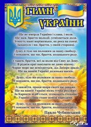

| >
|
Ukraine is a country in Eastern Europe. It has an area of 603,628 km2 (233,062 sq mi), making it the largest country entirely within Europe. Ukraine borders Russia to the east and northeast, Belarus to the northwest, Poland, Slovakia and Hungary to the west, Romania and Moldova to the southwest, and the Black Sea and Sea of Azov to the south and southeast, respectively.
The territory of modern Ukraine has been inhabited since 32,000 BC. During the Middle Ages, the area was a key center of East Slavic culture, with the powerful state of Kievan Rus' forming the basis of Ukrainian identity. Following its fragmentation in the 13th century, the territory was contested, ruled and divided by a variety of powers, including Lithuania, Poland, the Ottoman Empire, Austro-Hungary, and Russia. A Cossack republic emerged and prospered during the 17th and 18th centuries, but Ukraine's territories remained divided until they were consolidated into a Soviet republic in the 20th century. It became independent in 1991 following the collapse of the Soviet Union.
Ukraine has long been a global breadbasket because of its extensive, fertile farmlands, and it remains one of the world's largest grain exporters. The diversified economy of Ukraine includes a large heavy industry sector, particularly in aerospace and industrial equipment. |
Ukraine
 |